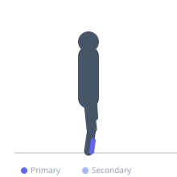
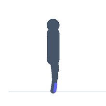

Exercise guide / Tibialis Raise
Tibialis Raise
The tibialis raise is a dorsiflexion exercise that targets the tibialis anterior — the muscle on the front of the shin — by raising the forefoot against resistance while keeping the heels fixed. It is the antagonist movement to calf raises and is frequently neglected in training programs. Strengthening the tibialis anterior is associated with reduced risk of shin splints and anterior leg pain in runners, walkers, and athletes.
Primary muscles
tibialis anterior
Secondary muscles
Equipment
No Equipment (Bodyweight)


Starting position
- Stand with heels against a wall or on a step edge, with the toes hanging free. The heels are the pivot point. Stand upright with back against the wall.
Setup
- No equipment required for the bodyweight version. A resistance band looped around a fixed object at shin height can add load. Alternatively, perform seated with the heels on the floor and the toes lifted against gravity.
Steps
- Step 1: Stand with heels on the floor or step edge, back against a wall, toes pointing forward.
- Step 2: Raise the forefoot as high as possible by pulling the toes and forefoot upward (dorsiflexion).
- Step 3: Hold the peak dorsiflexion contraction for one second.
- Step 4: Lower the forefoot under control back to the floor.
- Step 5: Repeat for the prescribed reps.
Coaching cues
- Pull the toes up as high as you can
- Feel the front of the shin working
- Don't let the foot drop — control the lowering
Breathing
- Breathe freely — this is a low-intensity isolation exercise.
Range of motion
- Maximum dorsiflexion at the top (toes pulled as high as possible) and full plantarflexion or return to neutral at the bottom.
Tempo
- 1-1-2-0 (raise 1s, hold 1s, lower 2s)
Common mistakes
- Barely lifting the toes — the tibialis anterior should be fully contracted at the top
- Moving too fast — slow, controlled reps with a peak contraction are more effective
Safety
- Very low injury risk exercise
- If shin pain occurs, reduce volume and check for underlying conditions
Training
- endurance: 20–40 reps
- endurance: 2–4 sets
- Rest: {'endurance': 30}